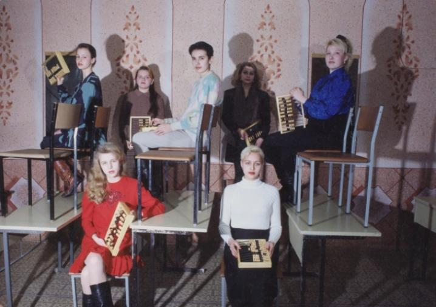
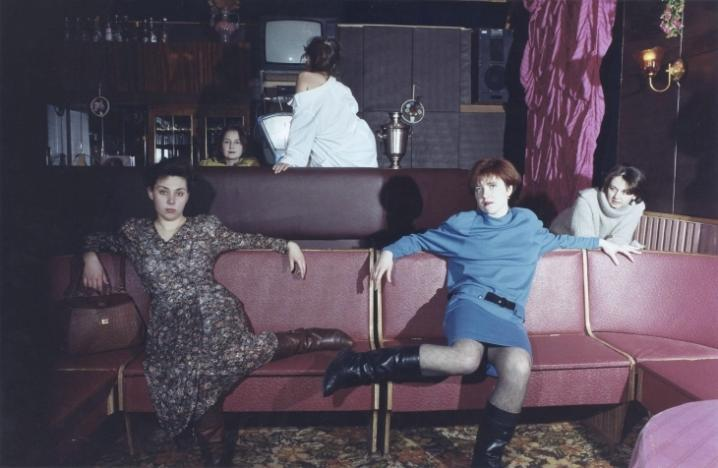
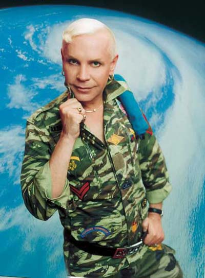

We stand firmly planted in a visual world,
surrounded by a universe of things to
look at. Images flicker from televisions,
iPads, computer monitors and more
large as towering billboards and as
small as compact cell phones. Such
images provide us with clues about our
environment, feeding our mind with
information that we find useful for survival
or for orientation purposes. But these
very same images clutter the horizon and
prevent us from discerning what is truly
important. How do we tell them apart?
*It appears to be that the Soviet
socialist realism was the main branch
of modernism, the most consistent one
if not the main, at least the equal. The
western pluralism created the conditions
of chaotic development, of the game with
no rules. Our evolution, on the contrary,
went on scientifically. And finally, leaves
of ash-tree appeared in the birch...*

